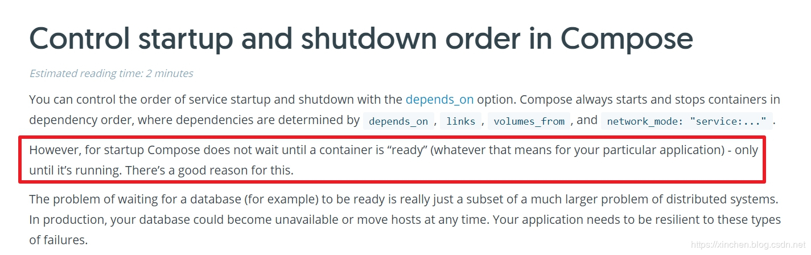
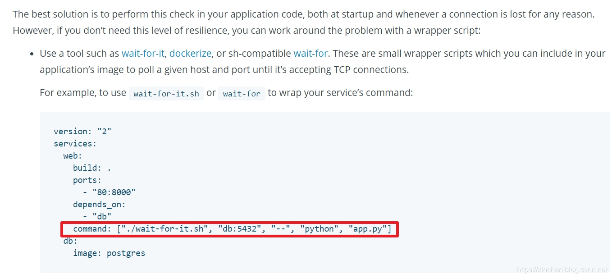
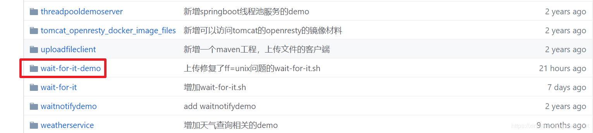
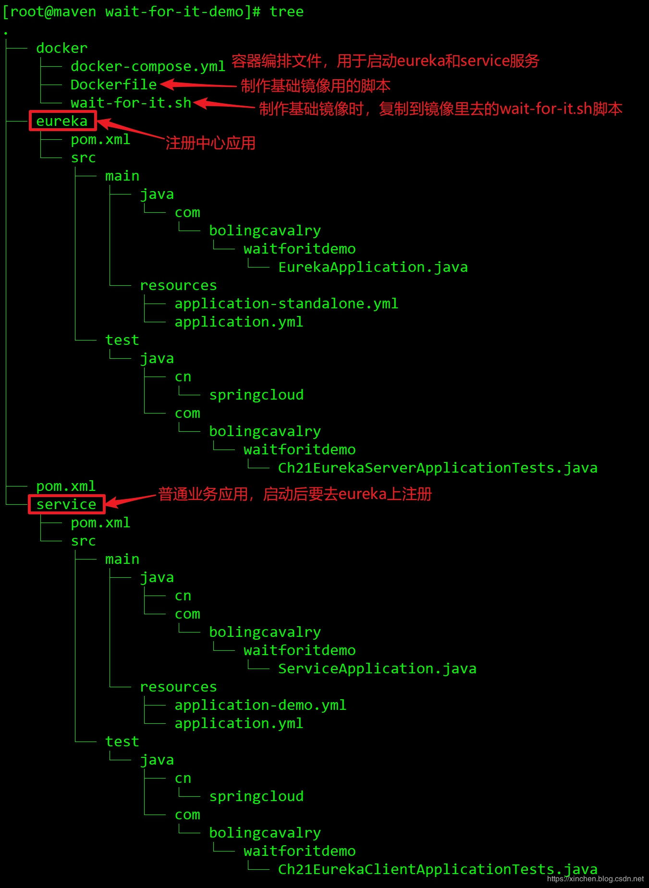
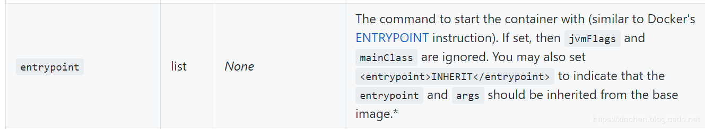
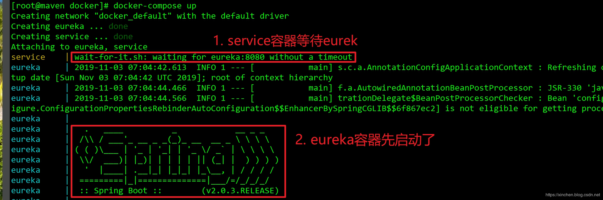
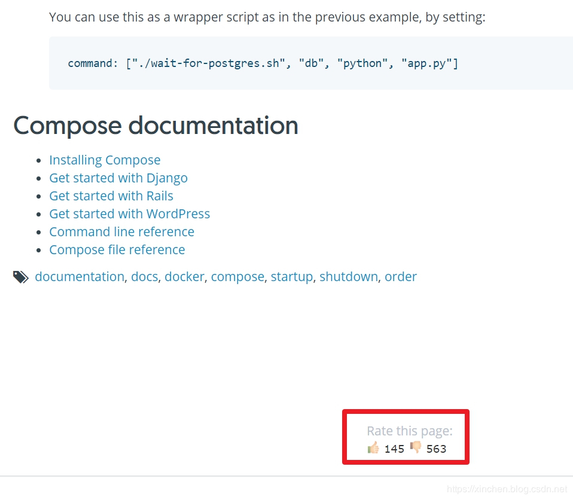

原文连接:https://www.cnblogs.com/bolingcavalry/p/11787756.html
上篇回顾
- 本文是《docker-compose下的java应用启动顺序两部曲》的终篇，在上一篇《docker-compose下的java应用启动顺序两部曲之一：问题分析》中，我们以SpringCloud环境下的注册中心和业务服务为例，展示了docker-compose.yml中depends_on参数的不足：即只能控制容器创建顺序，但我们想要的是eureka服务就绪之后再启动业务服务，并且docker官方也认为depends_on参数是达不到这个要求的，如下图所示：
 针对上述问题，docker给出的解决办法是使用wait-for-it.sh脚本来解决问题，地址：https://docs.docker.com/compose/startup-order/ ，如下图：
什么是wait-for-it.sh
- wait-for-it.sh脚本用来访问指定的地址和端口，如果收不到响应就等待一段时间再去重试，直到收到响应后，再去做前面指定好的命令，如上图红框所示./wait-for-it.sh db:5432 -- python app.py的意思是：等到db:5432这个远程访问能够响应的时候，就去执行python app.py命令
wait-for-it.sh文件的链接：
https://raw.githubusercontent.com/zq2599/blog_demos/master/wait-for-it-demo/docker/wait-for-it.sh环境信息
本次实战的环境如下：
- 操作系统：CentOS Linux release 7.7.1908
- docker：1.13.1
- docker-compose：1.24.1
- spring cloud：Finchley.RELEASE
- maven：3.6.0
- jib：1.7.0
实战简介
上一篇的例子中，我们用到了eureka和service两个容器，eureka是注册中心，service是普通业务应用，service容器向eureka容器注册时，eureka还没有初始化完成，因此service注册失败，在稍后的自动重试时由于eureka进入ready状态，因而service注册成功。
今天我们来改造上一篇的例子，让service用上docker官方推荐的wait-for-it.sh脚本，等待eureka服务就绪再启动java进程，确保service可以一次性注册eureka成功；
为了达到上述目标，总共需要做以下几步：
- 简单介绍eureka和service容器的镜像是怎么制作的；
- 制作基础镜像，包含wait-for-it.sh脚本；
- 使用新的基础镜像构建service镜像；
- 改造docker-compose.yml；
- 启动容器，验证顺序控制是否成功；
- wait-for-it.sh方案的缺陷；
接下来进入实战环节；
源码下载
如果您不想编码，也可以在GitHub上获取文中所有源码和脚本，地址和链接信息如下表所示：
| 名称 | 链接 | 备注|
| :-------- | :----| :----|
| 项目主页| https://github.com/zq2599/blog_demos | 该项目在GitHub上的主页 |
| git仓库地址(https)| https://github.com/zq2599/blog_demos.git | 该项目源码的仓库地址，https协议 |
| git仓库地址(ssh)| git@github.com:zq2599/blog_demos.git | 该项目源码的仓库地址，ssh协议 |
这个git项目中有多个文件夹，本章的应用在wait-for-it-demo文件夹下，如下图红框所示：

源码的结构如下图所示：

接下来开始编码了；
简单介绍eureka和service容器
上一篇和本篇，我们都在用eureka和service这两个容器做实验，现在就来看看他们是怎么做出来的：
- eureka是个maven工程，和SpringCloud环境中的eureka服务一样，唯一不同的是它的pom.xml中使用了jib插件，用来将工程构建成docker镜像：
<?xml version="1.0" encoding="UTF-8"?>
<project xmlns="http://maven.apache.org/POM/4.0.0" xmlns:xsi="http://www.w3.org/2001/XMLSchema-instance"
xsi:schemaLocation="http://maven.apache.org/POM/4.0.0 http://maven.apache.org/xsd/maven-4.0.0.xsd">
<modelVersion>4.0.0</modelVersion>
<groupId>com.bolingcavalry</groupId>
<artifactId>eureka</artifactId>
<version>0.0.1-SNAPSHOT</version>
<packaging>jar</packaging>
<name>eureka</name>
<description>eureka</description>
<parent>
<groupId>com.bolingcavalry</groupId>
<artifactId>wait-for-it-demo</artifactId>
<version>0.0.1-SNAPSHOT</version>
<relativePath>../pom.xml</relativePath> <!-- lookup parent from repository -->
</parent>
<properties>
<project.build.sourceEncoding>UTF-8</project.build.sourceEncoding>
<project.reporting.outputEncoding>UTF-8</project.reporting.outputEncoding>
<java.version>1.8</java.version>
<spring-cloud.version>Finchley.RELEASE</spring-cloud.version>
</properties>
<dependencies>
<dependency>
<groupId>org.springframework.cloud</groupId>
<artifactId>spring-cloud-starter-netflix-eureka-server</artifactId>
</dependency>
</dependencies>
<build>
<plugins>
<plugin>
<groupId>org.springframework.boot</groupId>
<artifactId>spring-boot-maven-plugin</artifactId>
</plugin>
<!--使用jib插件-->
<plugin>
<groupId>com.google.cloud.tools</groupId>
<artifactId>jib-maven-plugin</artifactId>
<version>1.7.0</version>
<configuration>
<!--from节点用来设置镜像的基础镜像，相当于Docerkfile中的FROM关键字-->
<from>
<!--使用openjdk官方镜像，tag是8-jdk-stretch，表示镜像的操作系统是debian9,装好了jdk8-->
<image>openjdk:8-jdk-stretch</image>
</from>
<to>
<!--镜像名称和tag，使用了mvn内置变量${project.version}，表示当前工程的version-->
<image>bolingcavalry/${project.artifactId}:${project.version}</image>
</to>
<!--容器相关的属性-->
<container>
<!--jvm内存参数-->
<jvmFlags>
<jvmFlag>-Xms1g</jvmFlag>
<jvmFlag>-Xmx1g</jvmFlag>
</jvmFlags>
<!--要暴露的端口-->
<ports>
<port>8080</port>
</ports>
<useCurrentTimestamp>true</useCurrentTimestamp>
</container>
</configuration>
<executions>
<execution>
<phase>compile</phase>
<goals>
<goal>dockerBuild</goal>
</goals>
</execution>
</executions>
</plugin>
</plugins>
</build>
</project>上述pom.xml中多了个jib插件，这样在执行mvn compile的时候，插件就会用构建结果制作好docker镜像并放入本地仓库；
- service是个普通的SpringCloud应用，除了在pom.xml中也用到了jib插件来构建镜像，它的配置文件中，访问eureka的地址要写成eureka容器的名称：
spring:
application:
name: service
eureka:
client:
serviceUrl:
defaultZone: http://eureka:8080/eureka/- 关于如何将java应用制作成docker镜像，如果您想了解更多请参考以下两篇文章：
《Docker与Jib(maven插件版)实战》
《Jib使用小结(Maven插件版)》
制作基础镜像
从上面的pom.xml可见，我们将Java应用制作成docker镜像时，使用的基础镜像是openjdk:8-jdk-stretch，这样做出的应用镜像是不含wait-for-it.sh脚本的，自然就无法实现启动顺序控制了，因此我们要做一个带有wait-for-it.sh的基础镜像给业务镜像用：
- 把wait-for-it.sh文件准备好，下载地址：https://raw.githubusercontent.com/zq2599/blog_demos/master/wait-for-it-demo/docker/wait-for-it.sh
- 在wait-for-it.sh文件所在目录新建Dockerfile文件，内容如下：
FROM openjdk:8-jdk-stretch
ADD wait-for-it.sh /wait-for-it.sh
RUN sh -c 'chmod 777 /wait-for-it.sh'注意：我这里用的是openjdk:8-jdk-stretch，您可以根据自己的实际需要选择不同的openjdk版本，可以参考：《openjdk镜像的tag说明》
- 执行命令docker build -t bolingcavalry/jkd8-wait-for-it:0.0.2 .就能构建出名为bolingcavalry/jkd8-wait-for-it:0.0.2的镜像了，请您根据自己的情况设置镜像名称和tag，注意命令的末尾有个小数点，不要漏了；
- 如果您有hub.docker.com账号，建请使用docker push命令将新建的镜像推送到镜像仓库上去，或者推送到私有仓库，因为后面使用jib插件构建镜像是，jib插件要去仓库获取基础镜像的元数据信息，取不到会导致构建失败；
使用新的基础镜像构建service镜像
我们的目标是让service服务等待eureka服务就绪，所以应该改造service服务，让它用docker官方推荐的wait-for-it.sh方案来实现等待：
- 修改service工程的pom.xml，有关jib插件的配置改为以下内容：
<plugin>
<groupId>com.google.cloud.tools</groupId>
<artifactId>jib-maven-plugin</artifactId>
<version>1.7.0</version>
<configuration>
<!--from节点用来设置镜像的基础镜像，相当于Docerkfile中的FROM关键字-->
<from>
<!--使用自制的基础镜像，里面有wait-for-it.sh脚本-->
<image>bolingcavalry/jkd8-wait-for-it:0.0.2</image>
</from>
<to>
<!--镜像名称和tag，使用了mvn内置变量${project.version}，表示当前工程的version-->
<image>bolingcavalry/${project.artifactId}:${project.version}</image>
</to>
<!--容器相关的属性-->
<container>
<!--entrypoint的值等于INHERIT表示jib插件不构建启动命令了，此时要使用者自己控制，可以在启动时输入，或者写在基础镜像中-->
<entrypoint>INHERIT</entrypoint>
<!--要暴露的端口-->
<ports>
<port>8080</port>
</ports>
<useCurrentTimestamp>true</useCurrentTimestamp>
</container>
</configuration>
<executions>
<execution>
<phase>compile</phase>
<goals>
<goal>dockerBuild</goal>
</goals>
</execution>
</executions>
</plugin>上述配置有几点需要注意：
a. 基础镜像改为刚刚构建好的bolingcavalry/jkd8-wait-for-it:0.0.2
b. 增加entrypoint节点，内容是INHERIT，按照官方的说法，entrypoint的值等于INHERIT表示jib插件不构建启动命令了，此时要使用者自己控制，可以在启动时输入，或者写在基础镜像中，这样我们在docker-compose.yml中用command参数来设置service容器的启动命令，就可以把wait-for-it.sh脚本用上了
c. 去掉jvmFlags节点，按照官方文档的说法，entrypoint节点的值等于INHERIT时，jvmFlags和mainClass参数会被忽略，如下图，地址是：https://github.com/GoogleContainerTools/jib/tree/master/jib-maven-plugin

至此，service工程改造完毕，接下来修改docker-compose.yml，让service容器能用上wait-for-it.sh
### 改造docker-compose.yml
- 完整的docker-compose.yml内容如下所示：
version: '3'
services:
eureka:
image: bolingcavalry/eureka:0.0.1-SNAPSHOT
container_name: eureka
restart: unless-stopped
service:
image: bolingcavalry/service:0.0.1-SNAPSHOT
container_name: service
restart: unless-stopped
command: sh -c './wait-for-it.sh eureka:8080 -t 0 -- java -Xms1g -Xmx1g -cp /app/resources:/app/classes:/app/libs/* com.bolingcavalry.waitforitdemo.ServiceApplication'
depends_on:
- eureka- 注意command参数的内容，如下，service容器创建后，会一直等待eureka:8080的响应，直到该地址有响应后，才会执行命令java -Xms1g -Xmx1g -cp /app/resources:/app/classes:/app/libs/* com.bolingcavalry.waitforitdemo.ServiceApplication：
sh -c './wait-for-it.sh eureka:8080 -t 0 -- java -Xms1g -Xmx1g -cp /app/resources:/app/classes:/app/libs/* com.bolingcavalry.waitforitdemo.ServiceApplication'- 对于命令java -Xms1g -Xmx1g -cp /app/resources:/app/classes:/app/libs/* com.bolingcavalry.waitforitdemo.ServiceApplication，您可能觉得太长了不好写，这里有个小窍门，就是在不使用entrypoint节点的时候，用jib插件制作的镜像本身是带有启动命令的，容器运行的时候，您可以通过docker ps --no-trunc命令看到该容器的完整启动命令，复制过来直接用就行了；
所有的改造工作都完成了，可以开始验证了；
启动容器，验证顺序控制是否成功
- 在docker-compose.yml文件所在目录执行命令docker-compose up，会创建两个容器，并且日志信息会直接打印在控制台，我们来分析这些日志信息，验证顺序控制是否成功；
- 如下图，可见service容器中并没有启动java进程，而是在等待eureka:8080的响应：
 - 继续看日志，可见eureka服务就绪的时候，service容器的wait-for-it.sh脚本收到了响应，于是立即启动service应用的进程：

继续看日志，如下图，service在eureka上注册成功：

综上所述，使用docker官方推荐的wait-for-it.sh来控制java应用的启动顺序是可行的，可以按照业务自身的需求来量身定做合适的启动顺序；wait-for-it.sh方案的缺陷
使用docker官方推荐的wait-for-it.sh来控制容器启动顺序，虽然已满足了我们的需求，但依旧留不是完美方案，留下的缺陷还是请您先知晓吧，也许这个缺陷会对您的系统产生严重的负面影响：
- 再开启一个SSH连接，登录到实战的linux电脑上，执行命令docker exec eureka ps -ef，将eureka容器内的进程打印出来，如下所示，java进程的PID等于1：
[root@maven ~]# docker exec eureka ps -ef
UID PID PPID C STIME TTY TIME CMD
root 1 0 2 07:04 ? 00:00:48 java -Xms1g -Xmx1g -cp /app/resources:/app/classes:/app/libs/* com.bolingcavalry.waitforitdemo.EurekaApplication
root 56 0 0 07:25 ? 00:00:00 /bin/bash
root 63 0 0 07:31 ? 00:00:00 ps -ef- 再来看看service的进程情况，执行命令docker exec service ps -ef，将service容器内的进程打印出来，如下所示，PID等于1的进程不是java，而是启动时的shell命令：
[root@maven ~]# docker exec service ps -ef
UID PID PPID C STIME TTY TIME CMD
root 1 0 0 07:04 ? 00:00:00 sh -c ./wait-for-it.sh eureka:8080 -t 0 -- java -Xms1g -Xmx1g -cp /app/resources:/app/classes:/app/libs/* com.bolingcavalry.waitforitdemo.ServiceApplication
root 7 1 1 07:04 ? 00:00:32 java -Xms1g -Xmx1g -cp /app/resources:/app/classes:/app/libs/* com.bolingcavalry.waitforitdemo.ServiceApplication
root 107 0 0 07:33 ? 00:00:00 ps -ef- 通常情况下，在执行命令docker stop xxx停止容器时，只有PID=1的进程才会收到"SIGTERM"信号量，所以在使用docker stop停止容器时，eureka容器中的java进程收到了"SIGTERM"可以立即停止，但是service容器中的java进程收不到"SIGTERM"，因此只能等到默认的10秒超时时间到达的时候，被"SIGKILL"信号量杀死，不但等待时间长，而且优雅停机的功能也用不上了；
- 您可以分别输入docker stop eureka和docker stop service来感受一下，前者立即完成，后者要等待10秒。
- 我的shell技能过于平庸，目前还找不到好的解决办法让service容器中的java进程取得1号进程ID，个人觉得自定义entrypoint.sh脚本来调用wait-for-it.sh并且处理"SIGTERM"说不定可行，如果您有好的办法请留言告知，在此感激不尽；
- 目前看来，控制容器启动顺序最好的解决方案并非wait-for-it.sh，而是业务自己实现容错，例如service注册eureka失败后会自动重试，但是这对业务的要求就略高了，尤其是在复杂的分布式环境中更加难以实现；
docker官方推荐使用wait-for-it.sh脚本的文章地址是：https://docs.docker.com/compose/startup-order/ ，文章末尾显示了顶和踩的数量，如下图，顶的数量是145，踩的数量达到了563，一份官方文档居然这么不受待见，也算是开了眼界，不知道和我前面提到的1号PID问题有没有关系：

至此，java应用的容器顺序控制实战就完成了，希望您在对自己的应用做容器化的时候，此文能给您提供一些参考。欢迎关注公众号：程序员欣宸